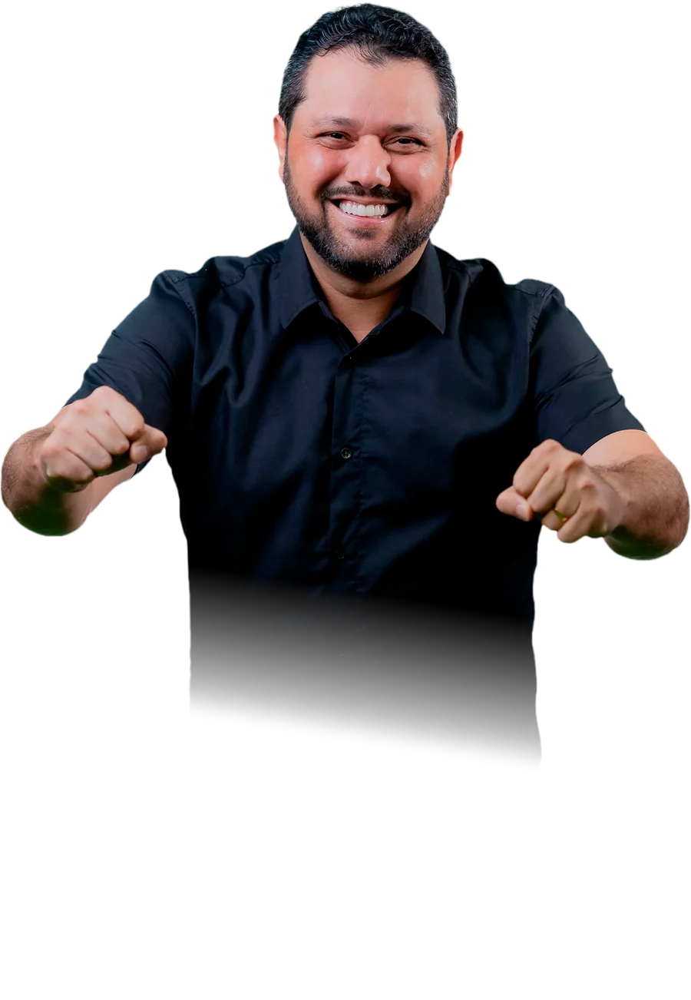

Proteção para nossas crianças
Autor da lei que proíbe a comercialização de linha cortante para pipas em Rio Branco.
Pelo Acre. Pela Família.
Experiência para transformar. Coragem para defender. Presença para fazer o Acre avançar.

Uma escolha com raiz
João Marcos Luz acredita que política se faz com escuta, responsabilidade e trabalho. Da cidade ao campo, cada decisão precisa melhorar a vida de quem vive aqui.
A história por trás do nome ↗Sobre João Marcos Luz
Vereador, ex-secretário municipal e diretor de trânsito, João Marcos Luz conhece de perto os desafios de Rio Branco e de todo o estado. Agora, coloca essa experiência à disposição de uma nova missão: representar o Acre na Câmara Federal.
Com diálogo, firmeza e compromisso com as famílias, defende políticas públicas que protejam quem mais precisa e abram caminhos para quem quer produzir, empreender e viver melhor.
Experiência comprovada
Antes de pedir confiança para representar o Acre em Brasília, João Marcos Luz construiu uma trajetória de entregas em Rio Branco.
Autor da lei que proíbe a comercialização de linha cortante para pipas em Rio Branco.
Autor da lei que torna permanentes os laudos de Autismo, Síndrome de Down e TDAH.
Aumento do valor da bolsa e do número de vagas para estagiários na Prefeitura de Rio Branco.
Com a reordenação do Centro POP, 78 pessoas foram resgatadas das ruas de Rio Branco.
As ações e resultados desta seção reproduzem informações dos materiais de campanha disponibilizados pela equipe. A documentação comprobatória deve ser consultada nos órgãos responsáveis.
Um mandato para fazer
Quatro compromissos para construir um Acre mais pujante, forte e justo para todos. Cada frente nasce de uma experiência real e aponta para uma ação concreta.
Uma política de habitação que comece por quem mais precisa e devolva segurança para recomeçar.
Assistência e direitos humanos para que trabalhador e usuário sejam tratados com dignidade.
Cuidar de quem protege o Acre com atenção à saúde mental e suporte para enfrentar a rotina.
Destravar a produção é abrir portas para trabalho, renda e desenvolvimento no campo e na cidade.
Plano em construção com o Acre
As propostas abaixo organizam as prioridades apresentadas pela campanha em uma leitura direta: qual é o desafio, qual é o compromisso e onde concentrar a atuação.
Famílias em situação de vulnerabilidade precisam de mais do que um endereço: precisam de segurança, acolhimento e condições para recomeçar.
Fortalecer a política de habitação para pessoas em situação de vulnerabilidade social e colocar o ser humano em primeiro lugar.
O mandato deve publicar ações, recursos destinados e resultados alcançados em cada frente de habitação e acolhimento.
Trabalhadores e usuários de políticas públicas precisam ser vistos com respeito, acesso a direitos e atendimento que preserve sua dignidade.
Valorizar e fortalecer a política de assistência e os direitos humanos, com atenção à dignidade das mulheres e ao futuro da juventude.
O mandato deve dar visibilidade às políticas apoiadas, aos públicos atendidos e às melhorias alcançadas.
Quem atua na proteção da sociedade enfrenta pressão, risco e desgaste. Cuidar dessas pessoas também é cuidar do Acre.
Fortalecer a política nacional de saúde mental e a assistência jurídica para as forças de segurança.
O mandato deve apresentar iniciativas, parcerias e indicadores de atendimento, prevenção e assistência.
O Acre precisa transformar seu potencial produtivo em trabalho e renda, reduzindo os obstáculos que impedem quem produz de avançar.
Apoiar o produtor rural e lutar para destravar embargos que dificultam a produção familiar e o agro.
O mandato deve mostrar entraves enfrentados, articulações realizadas e oportunidades de produção e emprego abertas.
Proteger integralmente as crianças, cuidar do futuro da juventude, respeitar a dignidade das mulheres, acolher idosos e pessoas com deficiência e defender um Acre pujante, forte e justo para todos.
A política é feita junto
Envie uma ideia, conte o que precisa mudar no seu bairro ou venha construir essa caminhada com a gente.
Quero participar ↗Para um Acre presente, produtivo e humano.
Pelo Acre. Pela Família.Perguntas frequentes
Informação clara também é uma forma de participação.
O número é 4522. Federal E 4522.
Use o formulário de contato abaixo ou fale com a campanha pelos canais oficiais.
Acompanhe as atualizações pelo Instagram @luz.acre e por este site.
Os dados de identificação e contato da campanha estão reunidos no rodapé desta página.
Ficha oficial
Os dados abaixo identificam a candidatura e a campanha. Para acompanhar a situação do registro e demais documentos, consulte diretamente as plataformas da Justiça Eleitoral.
Vamos conversar
Tem uma ideia, uma demanda ou quer somar? A campanha quer ouvir você.